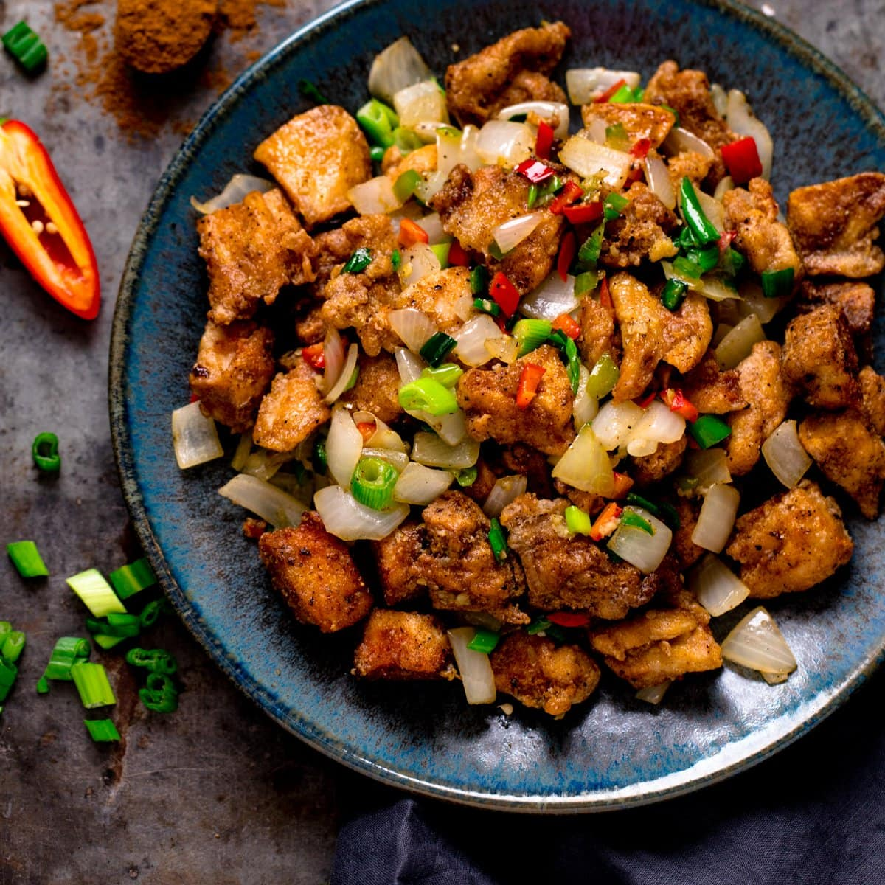

Salt and Pepper Chicken

Crispy fried chicken pieces tossed with a flavorful blend of salt,
pepper, garlic, and chili, garnished with fresh
herbs for a perfect balance of heat and savory goodness.
Ingredients:
- 1 lb boneless, skinless chicken thighs, cut into bite-sized pieces
- 1 cup all-purpose flour
- 1/2 cup cornstarch
- 1 teaspoon baking powder
- 1 teaspoon salt
- 1/2 teaspoon black pepper
- 1/2 teaspoon white pepper
- 1/2 teaspoon garlic powder
- 1/2 teaspoon paprika
- 1 cup cold water
- Vegetable oil for frying
- 2 cloves garlic, minced
- 1-2 fresh red chilies, sliced (optional)
- 2 green onions, chopped
- Fresh cilantro for garnish
Instructions:
- In a large bowl, combine the flour, cornstarch, baking powder, salt, black pepper, white pepper, garlic powder, and paprika. Gradually add the cold water, whisking until you have a smooth batter.
- Heat vegetable oil in a deep fryer or large pot to 350°F (175°C).
- Dip the chicken pieces into the batter, allowing any excess to drip off. Carefully place the chicken into the hot oil in batches, frying until golden brown and cooked through, about 5-7 minutes. Remove with a slotted spoon and drain on paper towels.
- In a separate pan, heat a small amount of oil over medium heat. Add the minced garlic and sliced red chilies (if using) and sauté for about 1 minute until fragrant.
- Add the fried chicken pieces to the pan and toss to coat with the garlic and chili mixture. Cook for an additional 2-3 minutes to combine the flavors.
- Remove from heat and garnish with chopped green onions and fresh cilantro.
- Serve immediately as a delicious appetizer or main dish. Enjoy!
Back to Home